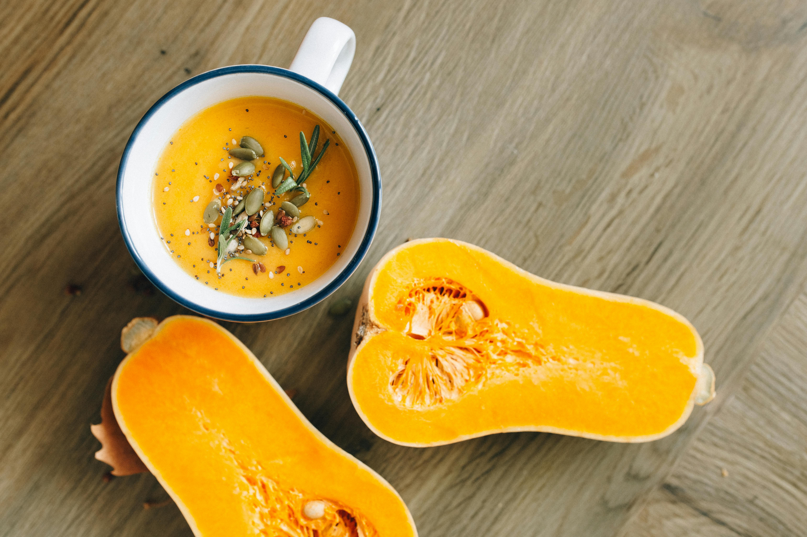

Home
Pumpkin Soup

Description
A smooth, velvety soup made with fresh pumpkin, carrots, onions, and a touch of garlic, blended with flavorful stock and seasoned with nutmeg. Comforting and perfect for chilly days.
Ingredients
- Stock
- Pumpkin (1kg)
- 2 onions
- 1 Garlic clove
- 1 Carrot
- Nutmeg
- Salt and pepper
- Butter
Steps
- In a large pot, melt a generous knob of butter over medium heat. Add the chopped onions and sauté gently until they become soft and translucent.
- Stir in the minced garlic, followed by the diced pumpkin and carrot. Cook for a few minutes, stirring occasionally, to allow the vegetables to develop some flavor.
- Pour in enough stock to completely cover the vegetables. Bring the mixture to a boil, then reduce the heat and simmer until the vegetables are tender.
- Once cooked, use an immersion blender (or transfer to a regular blender in batches) to purée the soup until smooth and creamy.
- Season with salt, freshly ground black pepper, and a pinch of nutmeg to taste. Serve hot.